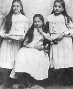
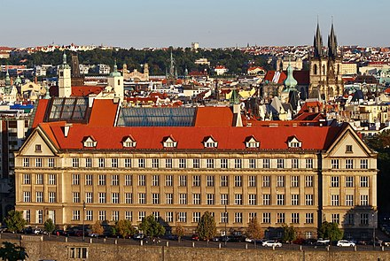
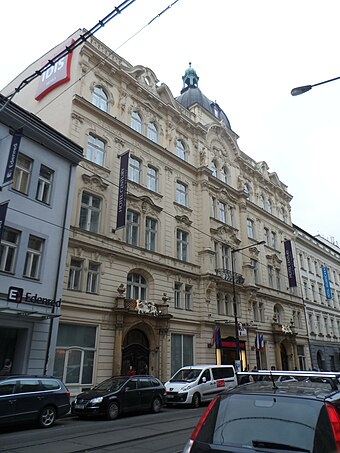

masa kecil

Franz kafka adalah seorang novelis dan penulis dari prague dia adalah penulis berpengaruh pada abad 20.
kafka lahir di prague,austia-hungaria (kini menjadi republik ceko) di keluarga yahudi.
Ia hidup dengan kedua orang tuanya bersama dengan 2 saudara laki-laki dan 3 saudara perempuan.
Nahasnya kedua saudara laki-laki kafka meninggal di usia sangat muda dan menyisakan kafka dengan ketiga saudara perempuannya.
ketiga saudara perempuan itu beranama Gabriele, Valerie dan Ottilie. Mereka bertiga harus kehilangan nyawanya pada genosida Yahudi yang dilakukan oleh jerman.
ayahnya, Hermann Kafka, yang keras dan formal, sangat mempengaruhi karya-karya Kafka.
Kafka merasa tertekan dan tidak dihargai oleh ayahnya, yang menuntutnya untuk menjadi lebih sukses dan praktis.
Kafka juga merasa terasing dari ibunya, Julie Kafka, yang lebih dekat dengan ayahnya daripada dengannya.
pendidikan

Kafka adalah anak yang cerdas dan pernah bersekolah di sekolah elit ternama.
Setelah lulus dari sekolah menengah atas dia kemudian
mendaftar pada Universitas Charles Ferdinan di Prague pada tahun 1901, pada awalnya dia mendaftar pada
jurusan kimia tetapi beberapa waktu kemudian berpindah ke hukum. Disana ia bertemu dengan sesorang bernama Max Broad yang kemudian menjadi sahabatnya.
singkat cerita Kafka mendapat gelar Doktor ilmu hukum pada 18 juni 1906 dan mulai meniti karir nya.
karir

setelah lulus Kafka mendapat pekerjaan di sebuah perusahaan asuransi, di sana dia di beri jadwal bekerja yang sangat lama sehingga memaksa dia
bekerja hingga kelelahan dan mengakibatkan waktu untuk menulis nya menjadi sedikit, alhasil tidak sampai setahun dia mengundurkan diri. Selang beberapa waktu kemudian dia mendapat pekerjaan di Lembaga asuransi pekerja.
di sana ia merasa cocok dengan pekerja dan bekerja keras sehingga naik jabatan menjadi tangan kanan bos dia.
ayahnya sering mencemooh pekerjaan putranya yang bekerja sebgai petugas asuransi sebagai "Brotberuf" yang secara harfiah sebagai pekerjaan yang tidak membawa untung.
dia berkeinginan untuk putranya meneruskan usaha keluarganya yaitu usaha pakaian.
Di tahun 1915 ia medapat surat wajib militer untuk mengabdi pada militer pada perang dunia pertama. Dia kemudian mencoba untuk bergabung dengan militer akan tetapi beberapa masalah
kesehatan membuat dia tidak bisa bergabung.
akhir hayat
pada tahun 1917 dia di diagnosa terkena penyakit tuberkulosis yang membuat dia pensiun dengan cepat. Di tahun 1923 Kafka bertemu seorang perempuan bernama Dora Diamant
,seorang guru taman kanak-kanak dari keluarga Yahudi orthodoks. Mereka berdua tinggal berdua bersama di berlin pada september 1923.
Penyakit tuberkulosis kafka semakin memburuk pada maret 1924 membuat dia kembali ke prague, yang di mana saudari perempuan dia ottla dan kekasihnya Dora Diamant harus mengurusi kafka di mulai dari saat itu.
Kafka kemudian menjalani pengobatan pada rumah sakit 10 april 1924 dan di sanalah kafka meninggal pada 3 juni 1924. Penyebab kematian kafka diyakini sebagai kelaparan karena kondisi tenggorokan kafka yang buruk sehingga sulit bagi dia untuk makan
karena pada zaman itu masih belum ada alat infus. Dia dimakamkan pada 11 juni 1924 di pemakaman New Jewish di Prague-Zizkov.
karya
Nama Franz Kafka pada awalnya tidaklah sepopuler seperti sekarang hanya sekumpulan kecil orang lah yang megenal karya-karya kafka pada masa itu. Kafka tidak pernah menyelesaikan novel-novelnya dan membakar 90% karya miliknya saat penyakitnya memburuk
. Sebelum kematiannya Kafka meminta kepada sahabatnya Max Broad untuk membakar sisa-sisa dari karya miliknya, akan tetapi
keinginan itu tidak dipenuhi oleh Max dan memutuskan untuk menerbitkan semua karya Franz Kafka yang masih tersisa. Cerita pendek Kafka yang paling populer dan terjual paling banyak, "The metamorfosis" diselesaikannya pada tahun 1912 dan diterbitkan pada 1915 tapi mendapat sedikit perhatian dari kalangan publik.
Sepanjang hidupnya kafka telah menciptakan novel-novel dan cerita yang masih banyak tidak dia selesaikan dan beberapa diselesaikan oleh temannya Max Broad.